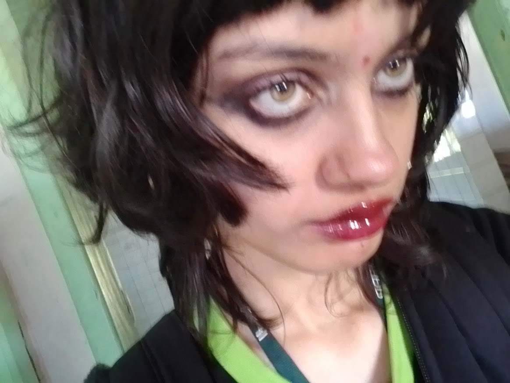

Meu nome real é Larissa Victoria Rack e sou estudante de Técnico em Informática para Internet no IFPR (Instituto Federal do Paraná), sou uma artista visual (não tão boa) e até gosto de design gráfico mas com certeza não é meu forte, mexo mais com a programação do site em si (como html, css e bem pouco de js).
Fiz esse portfolio por causa de uma atividade, mas provavelmente vou evoluir ele para algo que eu realmente use fora da atividade/escola.
Meu nome artístico foi inspirado no Sid Vicious (Sex Pistols), isso é só uma curiosidade mas acho que está óbvio.
